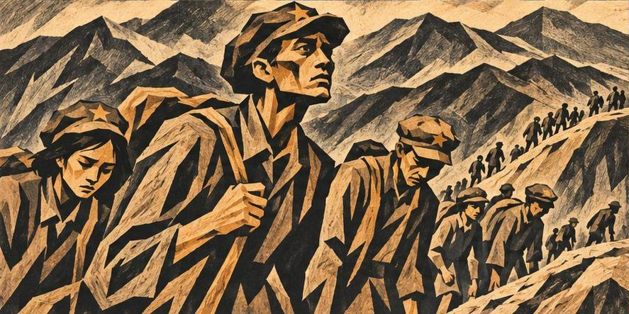
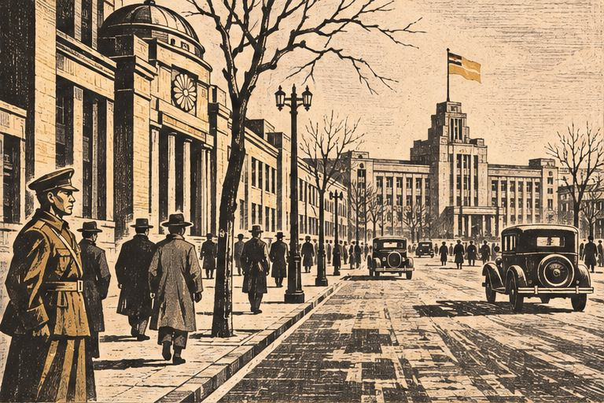
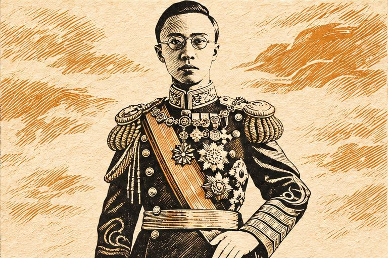
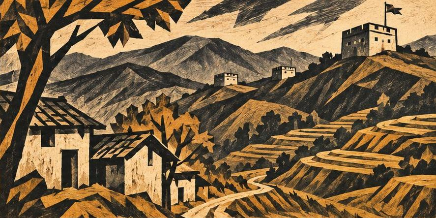
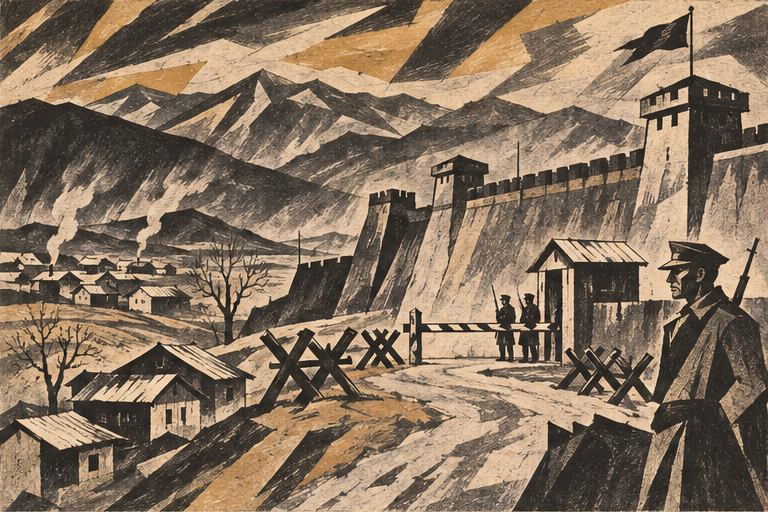
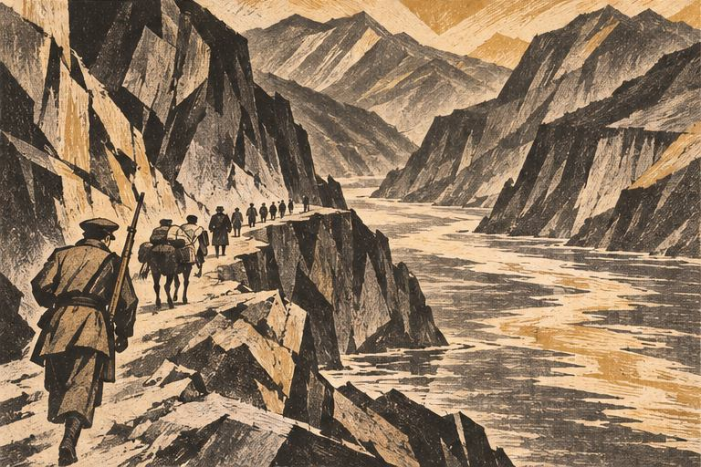
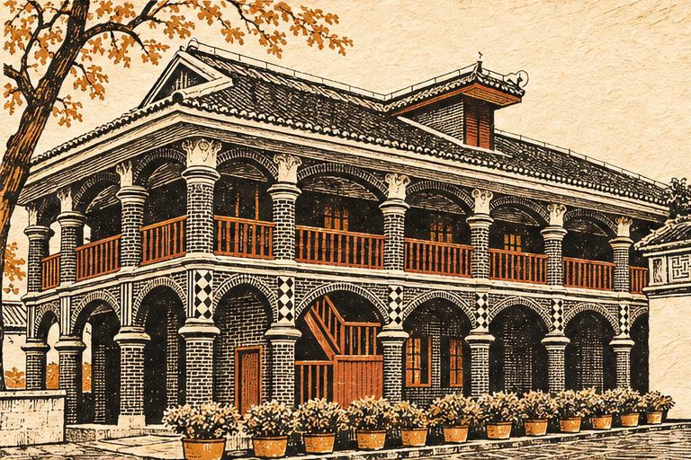
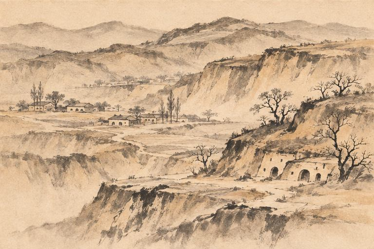

HIST 270 · Chapter 25 · Block 3
1932–1935
How did a costly military retreat change Mao’s position in the party?

German Expressionist reconstruction1932 · Northeast China

Concept · Puppet state

Early 1930s · Jiangxi
Concept · Encirclement campaign
An encirclement campaign is an effort to surround controlled territory and cut it off.
Chiang launched repeated campaigns against Communist areas.
1933–1934 · Fifth encirclement campaign

Concept · Blockhouse

October 1934 · Jiangxi
Concept · Military retreat
A retreat moves forces away from a position they cannot hold.
The immediate purpose was to preserve people and an organized force.
Late 1934 · Southern China

January 1935 · Zunyi

Concept · Party leadership
A leader’s standing in the party affected whose judgment guided decisions.
The failures in Jiangxi created an opening for Mao’s approach.
1935 · Western China
October 1935 · Northern Shaanxi

Concept · Political legitimacy
Legitimacy is the belief that a leader or group has a rightful claim to authority.
The CCP later used stories of the Long March to portray its leadership as tested through hardship.
1935 · Synthesis